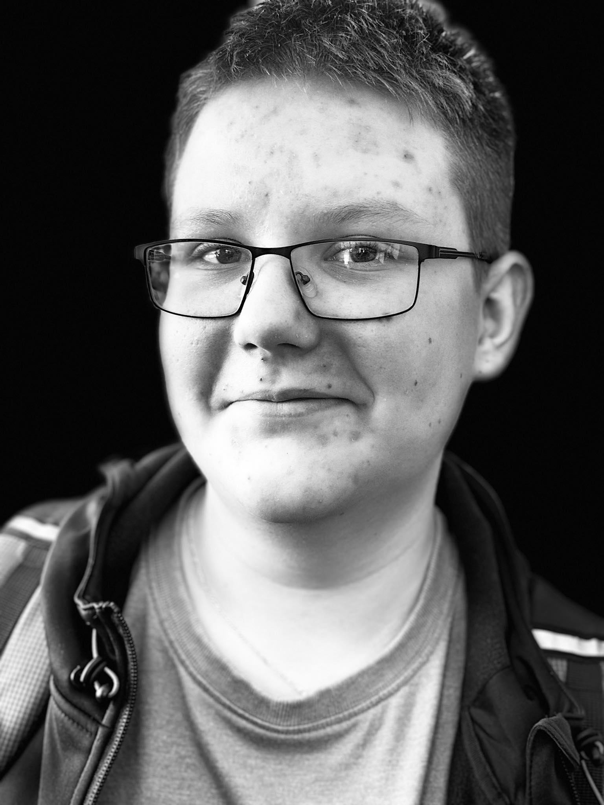

saaas

Kiełbacha
Twój browser nie obsługuje wideo HTML5.
Play film
Fiszki z pozytywizmu
Lalka • Nad Niemnem • Gloria victis • Katarynka
Słowa‑klucze
Twoja odpowiedź
Analiza odpowiedzi (słowa‑klucze)
Sprawdź odpowiedź
Obróć kartę
Następna karta
Zacznij od nowa
 Kiełbacha
Kiełbacha